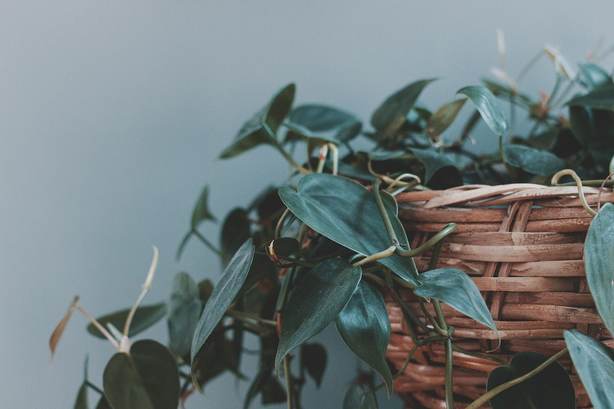

沖縄県うるま市石川にあるカフェ「ライフスタイルカフェ」のご案内ページです。営業時間やメニューなどの詳しいことは準備中。お電話かInstagramでご確認ください。
制作側の連想
「ライフ」から思い浮かべた、ライフゲーム
店名の由来は分かりません。このページは、屋号の「ライフ」という響きから、制作側が「ライフゲーム」を連想して作りました。ライフゲームは、方眼のマス(セル)が簡単な決まりで増えたり消えたりして、世代ごとに形が変わっていく数学パズルです。お店の理念や由来とは無関係の、制作側の連想です。
残る
生きているセルは、まわりに仲間が2〜3つあれば次の世代も残ります。
生まれる
空いたセルは、まわりにちょうど3つの仲間がいると、新しく生まれます。
消える
仲間が少なすぎても多すぎても、そのセルは次の世代で消えます。
第0世代の盤面
並んだ十二のセル(イメージ写真)
写真はお店のものではなく、国外または撮影地不明のフリー素材です。うるま市や実際のお店の写真ではありません。



ご案内
確認できているお店の情報
| 所在地 | 〒904-1106 沖縄県うるま市石川２３１６ |
|---|---|
| 電話 | 080-6487-2316 |
| 営業時間 | 準備中 |
| 定休日 | 準備中 |
| ご予約 | 準備中 |
| 駐車場 | 準備中 |
| SNS | Instagram @life_style_cafe.2021 |